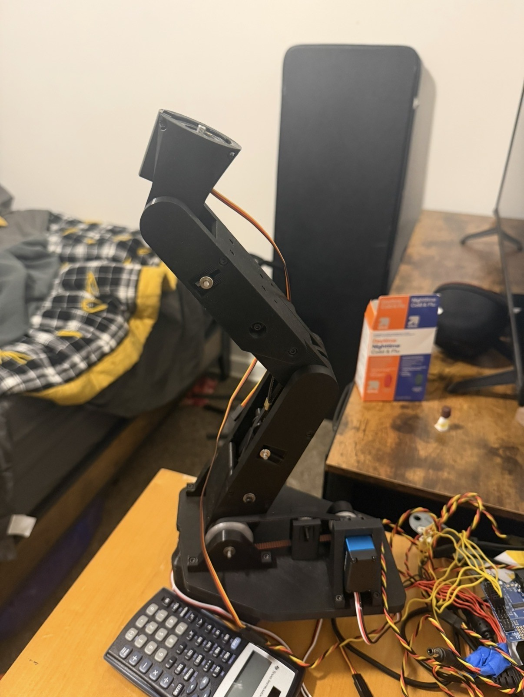
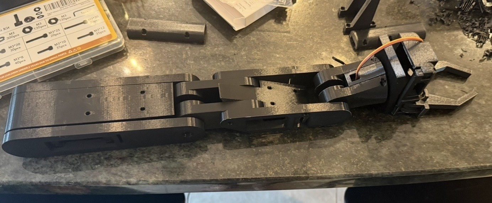

Stock Trading Bot
The goal of this project is to develop a software that analyzes every stock in the S&P or whatever index I decide, and then send a message to my phone each morning to tell me what stocks I should buy or sell. Due to exponential gain, a small edge on the market can double or quadruple retirement by the time I am 65.
ROLE Strategy Developer and Programmer
DATE 2024
TOOLS Python, Libraries, PineScript

The Goal
There is technically infinite gain to be found in the stock market which is why I saw potential in it. The biggest reason people lose money when the engage in short term stock market trades is the emotions attached to each trade. That is where I got the idea to completely remove the emotions attached and see if the mathematical edge could be found. I then wanted these decisions to be easy for me to access and execute.
Developing the Strategy
To make a stock trading bot worth creating, a reliable trading strategy needs to be developed. I tested my trading strategies through TradingView using a programming language called PineScript. The software allows trading strategies to be created and backtested easily on real data. There I would tweak parameters and observe the entries and exits taking by the strategy.

Developing Personal Backtesting Software
PineScript was good for testing the waters for the strategies but developing my own code to backtest stocks on was important because this was the way to automate it. Also the PineScript only allowed backtesting one stock at a time which is not an accurate way to properly test my strategy. I developed each of my trading strategies and had a separate file that ran the strategy on every stock in the S&P. It would then keep a list of every trade that it would engage in and then another file would go through the list and allocate money to each trade based on the entry and exit dates to ensure an accurate simulation.
Strategy Tweaking
Once the backtesting code functioned well, the strategies could be tweaked based on accurate simulations of how the trading strategy would work. I exported every trade that the bot made into an excel file along with a long list of indicators at the entry and exit points to try to find any corrolations. I would then go back into the strategy files and change the strategy accordingly.
Sending the Alerts and Going Live
Once the strategy was optimized I wrote code to make the bot analyze each stock the previous 200 days of data so it would have the current status of each stock. If a stock was flagged as a buy or sell signal the script would a telegram message to my phone telling me what stocks to buy or sell.
The last step was to autonomously run this script every morning that the stock market is open, so I uploaded the files to github and used a github feature to run the code every weekday around 3 am eastern time.

Final Result and Lessons Learned
The final result worked exactly as intended on the software side. I had a script that analyzed the S&P stocks every morning and sent a easily accessible message to my phone every morning. However, the returns were not as high as I dreamed of when I first started. The backtesting showed positive results and the first few months of forward tested showed the same thing, however when the S&P did poor, my strategy took a larger fall.
I believe if I returned to this project the strategy could be improved to a point that it would be worth investing in but at its current state it is a little risky. Everyone tells you that you cannot beat the market which is something I do not believe and I feel like I have developed a strategy with the potential to do it. I learned from this project that if everyone says something cannot be done and you disagree, you need to pursue it and find out yourself because that is when things get created that have never been created.